Generalized Polynomial Chaos¶
The module best.gpc implements functionality related to the
construction and manipulation of orthogonal polynomials with respect
to arbitrary probability distributions. Mathematically, let
 be a probability distribution. Then it allows the
construction of polynomials 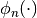 such that:
be a probability distribution. Then it allows the
construction of polynomials 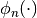 such that:
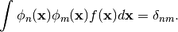
It is largly based on the legacy Fortran code ORTHPOL.
1D Orthogonal Polynomials¶
We start with the construction of polynomials in one dimension. This can be achieved via the class best.gpc.OrthogonalPolynomial which is described below.
- class best.gpc.OrthogonalPolynomial¶
A class representing a 1D orthogonal polynomial with respect to a particular probability density.
The polynomials are described internally via the recursive relations:

with
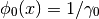
and

They are always properly normalized. Keep in mind that it inherits from best.maps.Function, so it is a multi-output function. The number of outputs is essentially equal to the number of polynomials represented by the class.
- __init__(degree[, rv=None[, left=-1[, right=1[, wf=lambda(x): 1.[, ncap=50[, quad=QuadratureRule[, name='Orthogonal Polynomial']]]]]]])¶
Initialize the object.
The polynomial is constructed on an interval
![[a, b]](_images/math/da2e551d2ca2155b8d8f4935d2e9757722c9bab6.png) ,
where 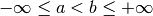. The construction
of the polynomial uses the Lanczos procedure
(see best.gpc.lancz()) which relies on a quadrature
rule. The default quadrature rule is the n-point Fejer rule
(see best.gpc.fejer()). These default can, of course,
be bypassed by overloading this class.
,
where 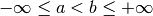. The construction
of the polynomial uses the Lanczos procedure
(see best.gpc.lancz()) which relies on a quadrature
rule. The default quadrature rule is the n-point Fejer rule
(see best.gpc.fejer()). These default can, of course,
be bypassed by overloading this class.Parameters: - degree (int) – The degree of the polynomial.
- rv (scipy.stats.rv_continuous) – A 1D random variable. It can be anything that inherits from scipy.stats.rv_continuous. If this is specified, the rest of the keyword arguments are ignored.
- left (float) – The left side of the interval over which the polynomial is defined.
 may be
specified by -float('inf').
may be
specified by -float('inf'). - right (float) – The right side of the interval over which the polynomial is defined.
 may be
specified by float('inf').
may be
specified by float('inf'). - f – The probability density serving as weight.
- ncap (int) – The number of quadrature points to be used.
- quad (best.gpc.QuadratureRule) – A quadrature rule. See the description below.
- name (str) – A name for the polynomials.
- degree¶
The maximum degree of the polynomials. The number of polynomials is degree + 1.
- alpha¶
The 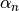 coefficients of the recursive relation.
- beta¶
The 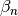 coefficients of the recursive relation.
- gamma¶
The
 coefficients of the recursive relation.
coefficients of the recursive relation.
- _eval(x):
Evaluate the function at x assuming that x has the right dimensions.
Note
Overloaded version of best.maps.Function._eval()
Parameters: x (1D numpy array of the right dimensions) – The evaluation point. Returns: The result. Return type: 1D numpy array of the right dimensions or just a float
- _d_eval(x):
Evaluate the Jacobian of the function at x. The dimensions of the Jacobian are num_output x num_input.
Note
Overloaded version of best.maps.Function._d_eval()
Parameters: x (1D numpy array of the right dimensions) – The evaluation point. Returns: The Jacobian at x. Return type: 2D numpy array of the right dimensions
Product Basis¶
1D polynomials can be combined to create multi-input polynomials. The class best.gpc.ProductBasis constructs multi-input orthogonal polynomials up to a given degree by combining 1D orthogonal polynomials. Here is its definition:
- class best.gpc.ProductBasis¶
A multi-input orthogonal polynomial basis.
It inherits from best.maps.Function.
- __init__([rv=None[, degree=1[, polynomials=None[, ncap=50[, quad=None[, name='Product Basis']]]]]])¶
Initialize the object.
Parameters: - rv (best.random.RandomVectorIndependent) – A random vector of independent random variables. If not None, then the keyword argument polynomials is ignored.
- degree (int) – The total degree of the basis. Each one of the 1D polynomials will have this degree. It is ignored if rv is None.
- polynomials (tuple or list of best.gpc.OrthogonalPolynomial) – We only look at this if rv is None. It is a collection of 1D orthogonal polynomials.
- ncap (int) – The number of quadrature points for each dimension.
- quad – The quadrature rule you might want to use.
- name (str) – A name for the basis.
- degree¶
The total order of the basis.
- polynomials¶
The container of 1D polynomials.
- terms¶
An array representing the basis terms.
- num_terms¶
The number of of terms up to each order
- _eval(x):
Evaluate the function at x assuming that x has the right dimensions.
Note
Overloaded version of best.maps.Function._eval()
Parameters: x (1D numpy array of the right dimensions) – The evaluation point. Returns: The result. Return type: 1D numpy array of the right dimensions or just a float
Constructing Polynomials¶
We now show how to construct several of the standar orthogonal polynomials used in the literature. For convenience, assume that in all examples we have imported the matplotlib.pyplot of the matplotlib library by:
import matplotlib.pyplot as plt
Hermite polynomials¶
The Hermite polynomials are defined on  are
orthogonal with respect to the probability density:
are
orthogonal with respect to the probability density:
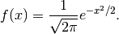
Here is how you can construct them up to degree 10:
from best.gpc import OrthogonalPolynomial
infty = float('inf') # A number representing infinty.
degree = 10 # The degree of the polynomials
wf = lambda(x): 1. / math.sqrt(2. * math.pi) * np.exp(-x ** 2 / 2.)
p = OrthogonalPolynomial(degree, left=-infty, right=infty, wf=wf)
Notice the definition of the probability density function. This could be a regular function or a best.maps.Function. Here we have opted for the much quicker lambda structure.
You may look at the coefficients of the recursive formula by:
print str(p)
which should produce the following text:
Orthogonal Polynomial:R^1 --> R^11
alpha: [ 8.24721933e-17 3.00634774e-16 -1.87973171e-16 3.50005961e-16
-5.28859926e-16 4.05750024e-16 -6.69888614e-16 -8.13357045e-16
8.06209016e-16 -2.21298838e-15 7.45252594e-16]
beta: [ 1.00000012 1.00000151 1.41419988 1.73184818 2.0000218 2.24118187
2.45731915 2.59905334 2.71187277 3.16796779 3.68960306]
gamma: [ 1.00000012 1.00000151 1.41419988 1.73184818 2.0000218 2.24118187
2.45731915 2.59905334 2.71187277 3.16796779 3.68960306]
normalized: True
You can see the polynomials by:
x = np.linspace(-2., 2., 100)
plt.plot(x, p(x))
plt.show()
which should produce the following figure:
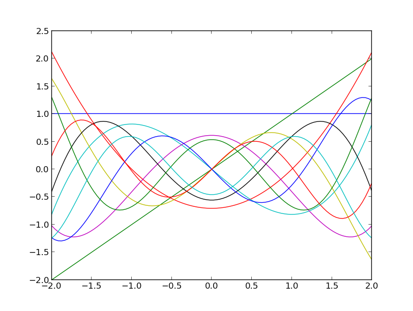The Hermite polynomials up to degree 10.
Similarly you may visualize their derivatives by:
plt.plot(x, p.d(x))
plt.show()
which should produce the following figure:
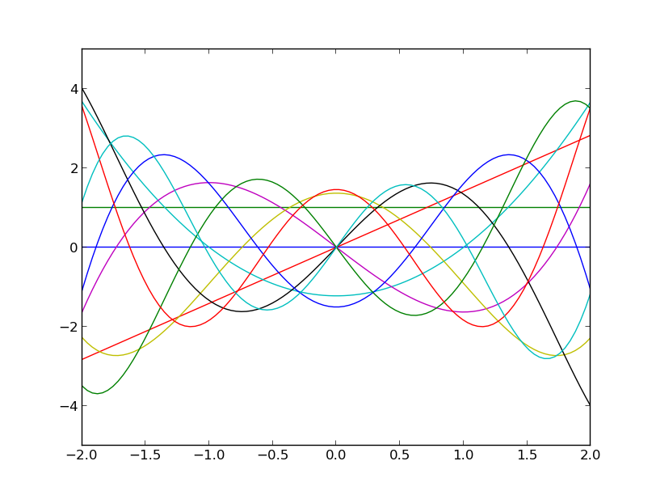The derivative of the Hermite polynomials up to degree 10.
Laguerre polynomials¶
The Laguerre polynomials are defined on  are
orthogonal with respect to the probability density:
are
orthogonal with respect to the probability density:
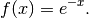
Up to degree 10, they may be constructed by:
from best.gpc import OrthogonalPolynomial
infty = float('inf') # A number representing infinty.
degree = 10 # The degree of the polynomials
wf = lambda(x): np.exp(-x)
p = OrthogonalPolynomial(degree, left=0, right=infty, wf=wf)
Here is how they look:
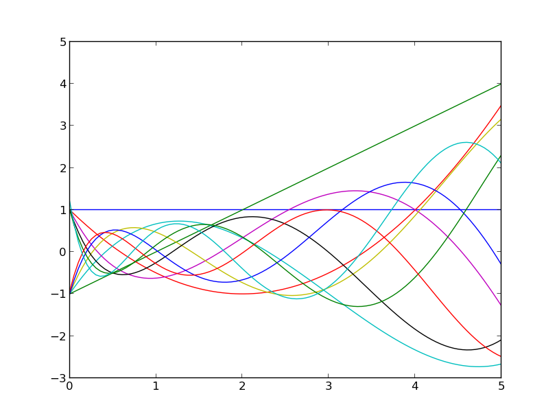The Laguerre polynomials up to degree 10.
Exploiting scipy.stats¶
It is also possible to use functionality from scipy to define the probability density. For example, you may construct the Laguerre polynomials by:
import scipy.stats
# Define the random variable
rv = scipy.stats.expon()
p = OrthogonalPolynomial(degree, rv=rv)
This is a nice trick, because you can immediately construct any orthogonal polynomial you wish making use of the probability distributions that can be found in scipy.stats. All you need to do is:
- Construct a random variable rv.
- USe rv.pdf as the weight function when constructing the best.gpc.OrthogonalPolynomial.
Here are for example orthogonal polynomials with respect to the Beta distribution:
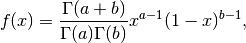
with 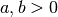 and 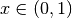:
import scipy.stats
a = 0.3
b = 0.8
rv = scipy.stats.beta(a, b)
p = best.gpc.OrthogonalPolynomial(6, rv=rv)
Here are the first six:
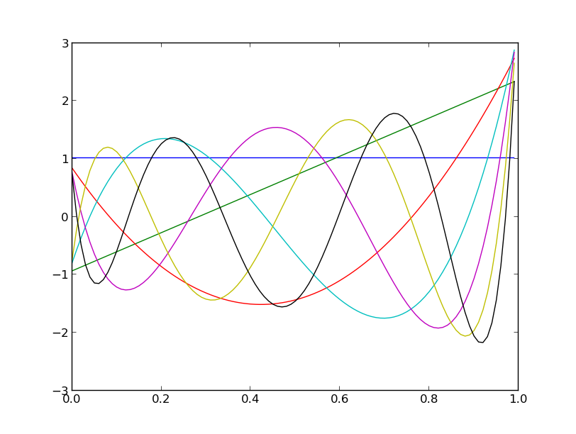The first six orthogonal polynomials with respect to the Beta distribution with 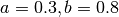.
Exploiting best.random¶
Let us take the Exponential random variable of the previous example,
condition it to live in a small interval (say  ) and
construct some orthogonal polynomials there. Here is how:
) and
construct some orthogonal polynomials there. Here is how:
import scipy.stats
from best.random import RandomVariableConditional
# Define the random variable
rv = scipy.stats.expon()
# The conditioned random variable
rv_cond = RandomVariableConditional(rv, (1, 2))
p = OrthogonalPolynomial(degree, rv=rv_cond)
This produces the following figure:
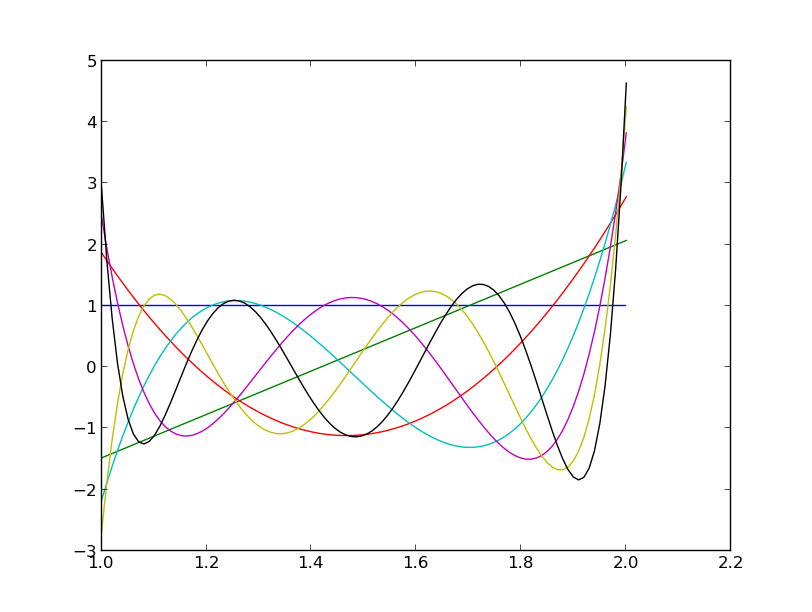The first six orthogonal polynomials with respect to an Exponential distribution restricted to live on
Constructing Product Basis¶
Let’s construct now a product basis of degree six based on a random vector of independent random variables. This can be achieved by:
import scipy.stats
from best.random import RandomVectorIndependent
from best.gpc import ProductBasis
# Construct the random vector (exponential, beta and normal)
rv = RandomVectorIndependent((scipy.stats.expon(),
scipy.stats.beta(0.4, 0.7),
scipy.stats.norm()))
# Construct the product basis
p = ProductBasis(rv=rv, degree=6)
print str(p)
The output is as follows:
Product basis:R^3 --> R^84
sz = 84
0: 0 0 0
1: 1 0 0
2: 0 1 0
3: 0 0 1
4: 2 0 0
5: 1 1 0
6: 1 0 1
7: 0 2 0
8: 0 1 1
9: 0 0 2
10: 3 0 0
11: 2 1 0
12: 2 0 1
13: 1 2 0
14: 1 1 1
15: 1 0 2
16: 0 3 0
17: 0 2 1
18: 0 1 2
19: 0 0 3
20: 4 0 0
21: 3 1 0
22: 3 0 1
23: 2 2 0
24: 2 1 1
25: 2 0 2
26: 1 3 0
27: 1 2 1
28: 1 1 2
29: 1 0 3
30: 0 4 0
31: 0 3 1
32: 0 2 2
33: 0 1 3
34: 0 0 4
35: 5 0 0
36: 4 1 0
37: 4 0 1
38: 3 2 0
39: 3 1 1
40: 3 0 2
41: 2 3 0
42: 2 2 1
43: 2 1 2
44: 2 0 3
45: 1 4 0
46: 1 3 1
47: 1 2 2
48: 1 1 3
49: 1 0 4
50: 0 5 0
51: 0 4 1
52: 0 3 2
53: 0 2 3
54: 0 1 4
55: 0 0 5
56: 6 0 0
57: 5 1 0
58: 5 0 1
59: 4 2 0
60: 4 1 1
61: 4 0 2
62: 3 3 0
63: 3 2 1
64: 3 1 2
65: 3 0 3
66: 2 4 0
67: 2 3 1
68: 2 2 2
69: 2 1 3
70: 2 0 4
71: 1 5 0
72: 1 4 1
73: 1 3 2
74: 1 2 3
75: 1 1 4
76: 1 0 5
77: 0 6 0
78: 0 5 1
79: 0 4 2
80: 0 3 3
81: 0 2 4
82: 0 1 5
83: 0 0 6
num_terms = 1 4 10 20 35 56 84
Let’s evaluate the basis at a few points:
x = rv.rvs(size=10)
phi = p(x)
print phi.shape
where phi is the design matrix.